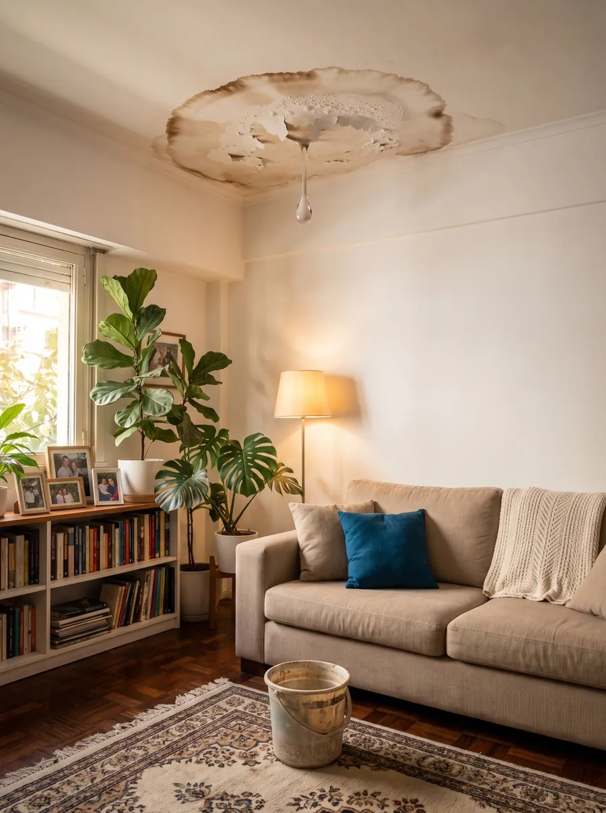

Si te pasa algo de esto, el agua ya encontró el camino.
- Goteras en el techo cada vez que llueve
- Manchas de humedad en el cielorraso o en las paredes
- Una terraza o una losa que filtra al piso de abajo
- Paredes con humedad que vuelve a aparecer
- Una membrana que ya no aguanta (mirá la recuperación de membranas)
La impermeabilización elástica no tapa el problema por arriba: entra por el mismo camino que la filtración y la sella desde adentro.

Cómo lo hacemos: entra como el agua.
-
01
Entra como el agua
Lo aplicamos con rodillo y el producto entra en la estructura mojándola, por el mismo camino que hace la filtración.
-
02
Se vuelve gel
En segundos gelifica adentro de la fisura.
-
03
Sella por dentro
Queda elástico y adentro: no lo arruinan el sol, el granizo ni el tránsito.
Dónde lo hacemos
Por qué Impermeabilización elástica Solmi
- Productos no tradicionales
- De desarrollo y fabricación propia, ajustados a cada obra. No revendemos productos de terceros.
- Sin molestias de obra
- Sin polvo ni ruido. Trabajamos con el lugar en uso: no te tenés que mover.
- Llave en mano
- Nosotros hacemos todo, del diagnóstico a la entrega.
- Más de noventa empresas e instituciones
- Ya confiaron en nosotros. Mirá quiénes.
Preguntas frecuentes
¿Hay que romper algo?
No. Es impermeabilización sin molestias de obra: no rompemos, no usamos membranas, pinturas ni brea, y no hay polvo ni ruido de obra.
¿Puedo seguir usando la casa mientras trabajan?
Sí. Trabajamos con el lugar en uso: casas habitadas, edificios con vecinos y hoteles abiertos.
¿El sol o el granizo lo arruinan?
No. El sellado queda adentro de la estructura, así que el sol, el granizo y el tránsito no lo degradan.
¿Es una pintura?
No. Lo pasamos con rodillo, pero no queda como una capa arriba: el producto entra en la estructura, se vuelve gel y sella por dentro.
¿Cuánto cuesta?
Depende de cada trabajo. Mandanos por WhatsApp fotos del lugar y los metros aproximados y te pasamos el presupuesto sin cargo. Aceptamos distintas formas de pago.
¿Trabajan en mi zona?
Trabajamos en todo el país, desde San Pedro, Buenos Aires. Escribinos con tu localidad.
Otros servicios
Contanos qué necesitás y lo resolvemos.
Mandanos fotos y los metros aproximados, y te pasamos el presupuesto sin cargo. Aceptamos distintas formas de pago.